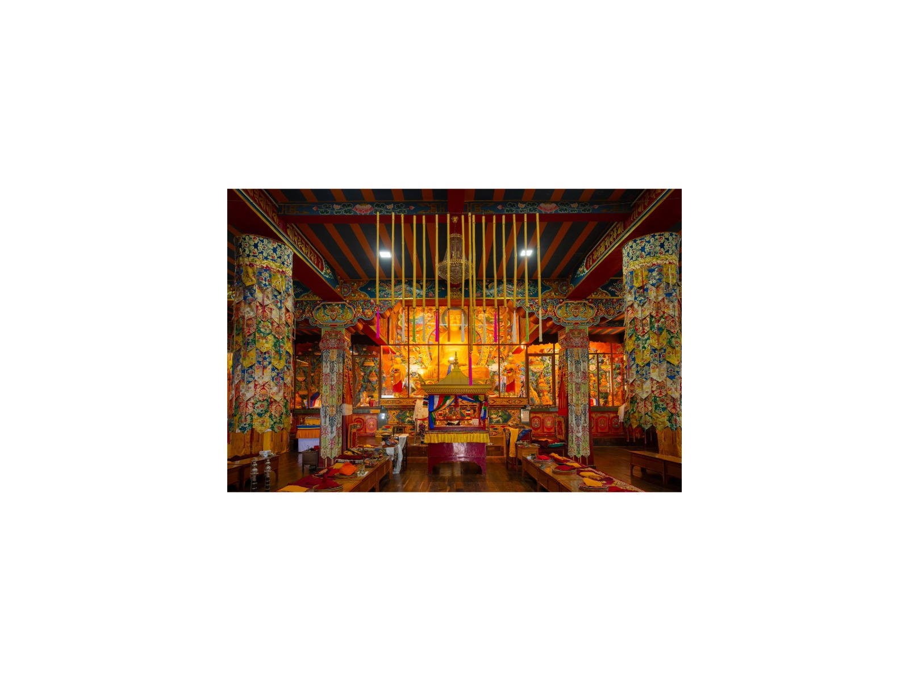
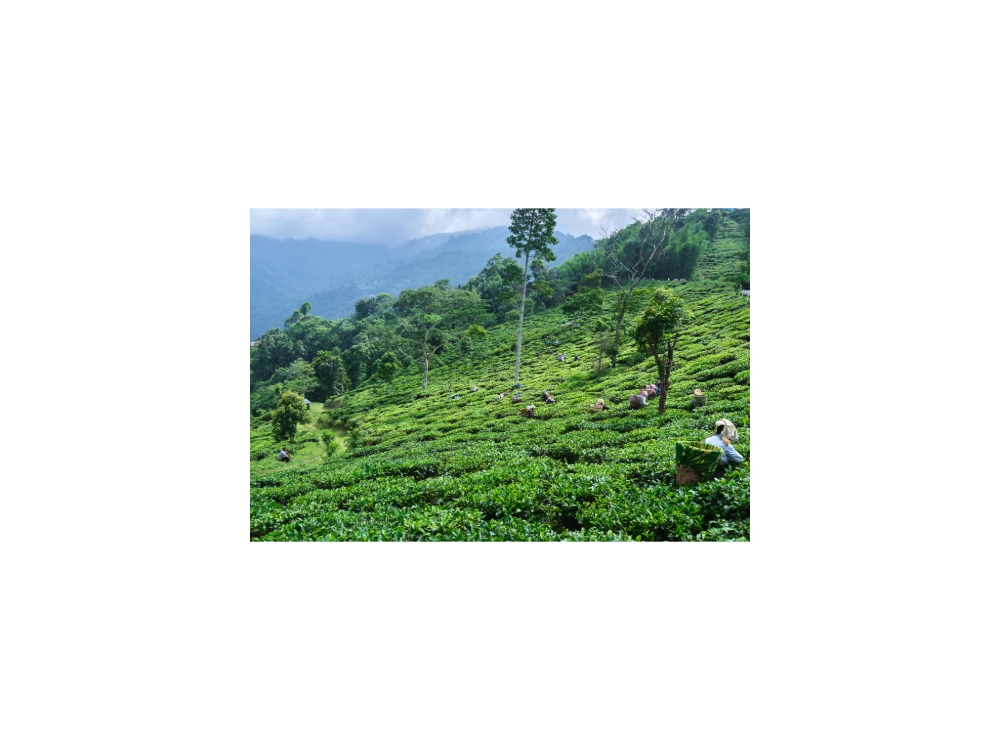
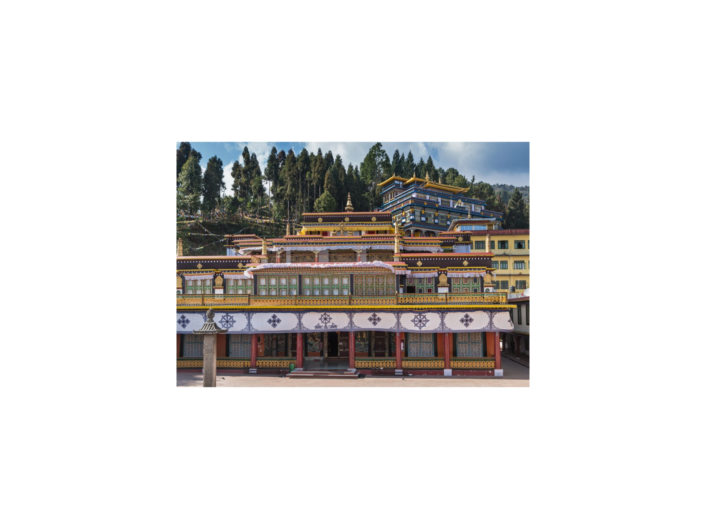
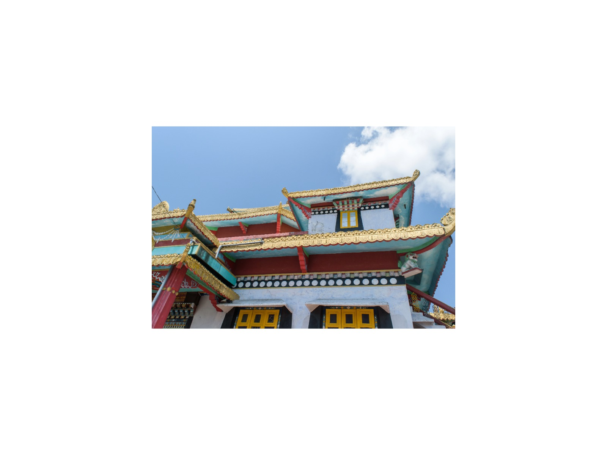

5 дней: Восточные Гималаи — Дарджилинг, Калимпонг и Гангток
Дели · Багдогра · Дарджилинг · Калимпонг · Гангток
О путешествии
Чайные плантации, монастыри и рассвет над Канченджангой в Дарджилинге, Калимпонге и Гангтоке.
Комфортный ритм, время на каждом объекте.
Главное
- Рассвет над Канченджангой на Тигровом холме
- Монастырь Гум, петля Батасия и чайные плантации
- Холм Деоло в Калимпонге и монастырь Румтек в Гангтоке
- Продление на одну ночь к высокогорному озеру Цомго и храму Баба — по желанию
Маршрут и программа по дням
Схематичный маршрут, не в масштабе.
День 1Прибытие в предгорья и переезд в Дарджилинг
Перелёт из Дели в Багдогру (авиабилет не включён). Живописная дорога в гору до Дарджилинга (около 3–3,5 часов). Заселение и свободный вечер. Ночь в Дарджилинге.
День 2Рассвет над Канченджангой и наследие Дарджилинга
Выезд затемно на Тигровый холм — встретить рассвет над горой Канченджанга. Петля Батасия и монастырь Гум.
После завтрака — чайные плантации, Гималайский альпинистский институт, Гималайский зоологический парк и японская пагода мира. Ночь в Дарджилинге.
День 3Живописная дорога в Гангток через Калимпонг
Переезд в Гангток через Калимпонг (около 6–7 часов с остановками). Холм Деоло, смотровая площадка Дурпин-Дара, монастырь Занг Дхок Палри Пходанг и питомник Пайн-Вью. Ночь в Гангтоке.
День 4Монастыри Гангтока и тибетская культура
Монастырь Румтек, Институт тибетологии Намгьял, монастырь Энчей и смотровая площадка Таши. Вечерняя прогулка по пешеходной улице МГ-Марг. Ночь в Гангтоке.
День 5Спуск в Багдогру и отъезд
Спуск в Багдогру (около 4,5–5 часов) к рейсу в Дели; бронируйте рейс на вторую половину дня или вечер.
Опция (+1 ночь)Высокогорное озеро Цомго и храм Баба
Нужен пропуск, оформленный заранее (иностранным гражданам — уточнить действующие правила для Сиккима), и предварительное бронирование.
День 5 отводится на поездку из Гангтока к озеру Цомго (3 780 м) и храму Баба (около 4 000 м); трансфер в Багдогру и перелёт в Дели переносятся на 6-й день.
Лучшее время для поездки
Лучшее Возможно Нежелательно
Лучшее время: мар–май, окт–ноя. Также подходит: дек–фев, сен.
Март — май и октябрь — ноябрь дают самые ясные виды на Канченджангу. С июня по сентябрь — сильные дожди и задержки на дорогах.
Что включено
Включено
- Частный автомобиль с кондиционером и водителем
- Лицензированный гид (русский или английский)
- Входные билеты в памятники
- Отели (4 ночи)
Не включено
- Авиабилеты
- Питание, если не указано
- Чаевые и личные расходы
- Туристическая страховка
Ориентировочно; точный состав подтверждается в вашем персональном расчёте.
Полезно знать
- Оползни в сезон дождей могут задерживать дороги Дарджилинг — Калимпонг — Гангток; виды с Тигрового холма зависят от погоды.
Места этого маршрута
Тигровый холм
Монастырь Гум Петля Батасия
Петля Батасия
Чайные плантации Дарджилинга Холм Деоло
Холм Деоло
Монастырь Румтек Озеро Цомго
Озеро Цомго
Монастырь Занг Дхок Палри Монастырь Энчей
Монастырь Энчей МГ-Марг в Гангтоке
МГ-Марг в ГангтокеВопросы
Это частное путешествие?
Да. Каждое путешествие — только для вас и ваших спутников, с личным гидом, автомобилем и водителем. Никаких групп и сборных туров.
Можно ли изменить маршрут?
Да. Эта программа — отправная точка. Расскажите об интересах, темпе и датах, и я скорректирую маршрут до расчёта стоимости.
На каких языках проводятся туры?
Викрамджит проводит экскурсии на русском и английском.
Насколько тур физически сложный?
Комфортный ритм, время на каждом объекте. Оценка темпа: умеренный темп.
Как забронировать и когда я узнаю цену?
Отправьте запрос с датами. В течение 24 часов вы получите персональную программу и расчёт стоимости.
Темы
Гималайские путешествия Духовность и многоконфессиональность
Направления
Похожие путешествия
 1 день
1 деньДели за один день: имперская столица и духовное наследие
Старый Дели, могольские мавзолеи и святыни трёх религий — в вашем темпе за один частный день.
Подробнее → 8 дней
8 дней8 дней: гималайская узкоколейка — Шимла, долина Куллу и Мак-Леод Гандж
Узкоколейка ЮНЕСКО, колониальная Шимла, долина Куллу и тибетские холмы Мак-Леод Гандж за восемь дней.
Подробнее → 9 дней
9 дней9 дней: гималайская панорама и Золотой храм
Гималайские городки и монастыри и финал у Золотого храма в Амритсаре — девять дней.
Подробнее →